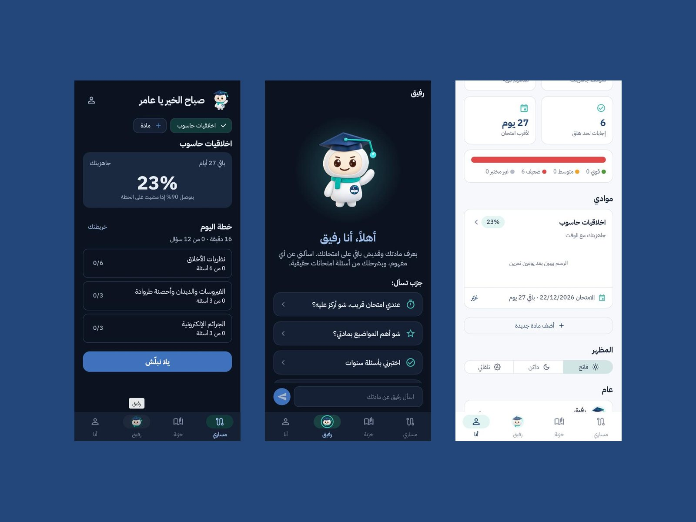
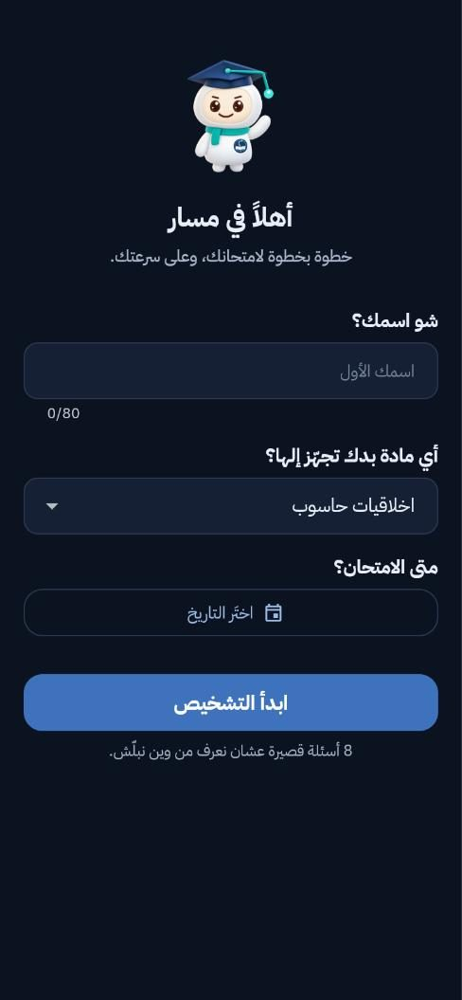
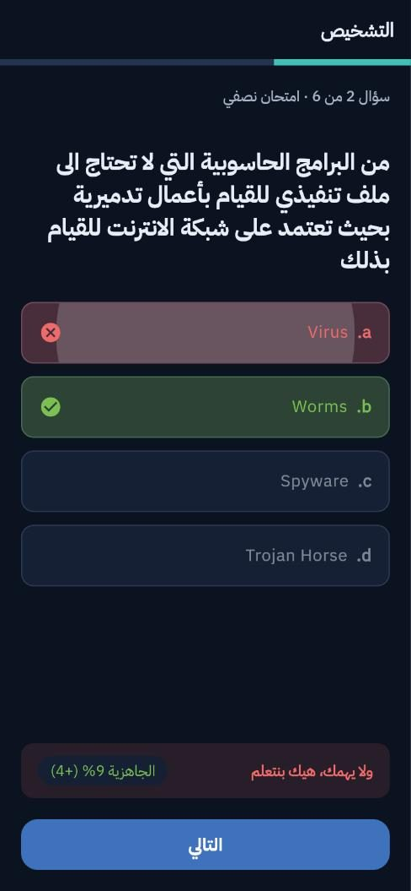
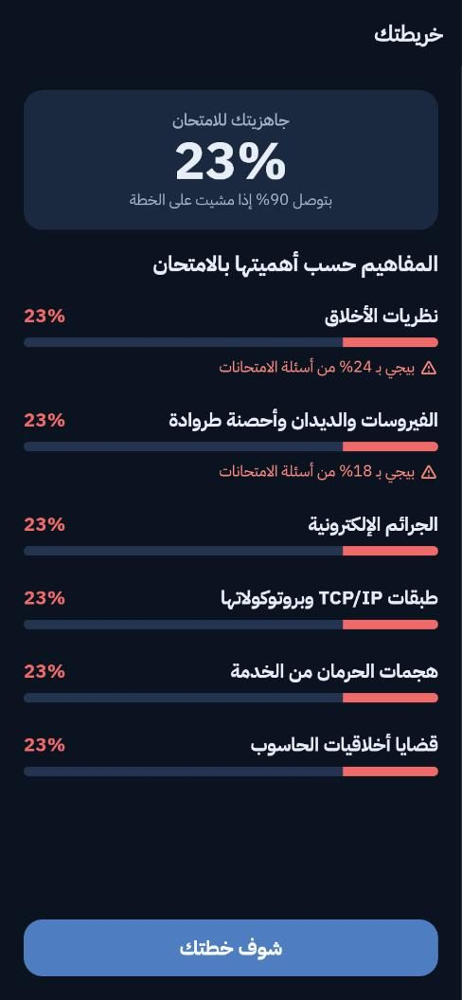
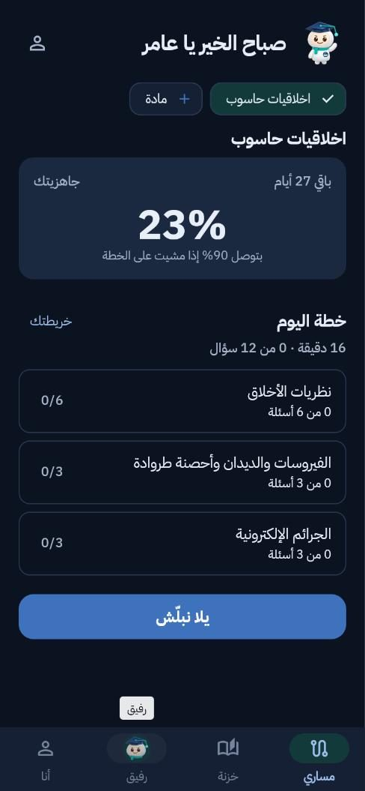
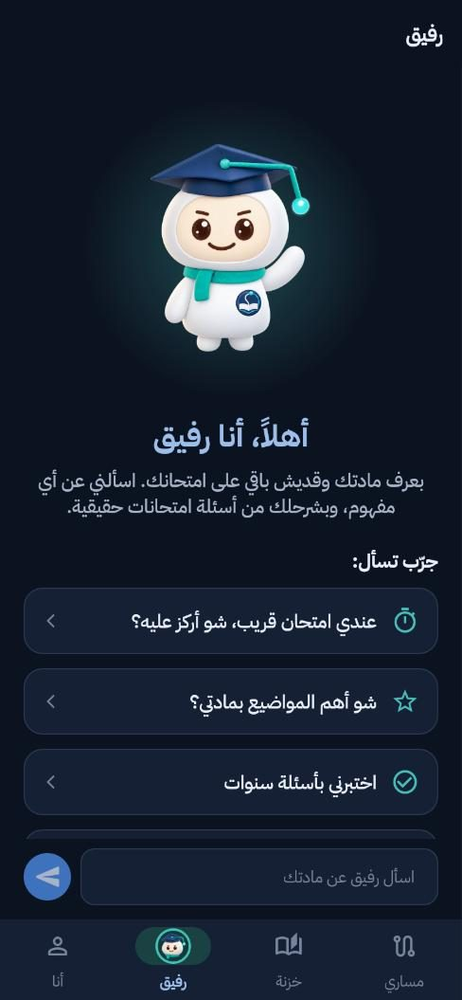
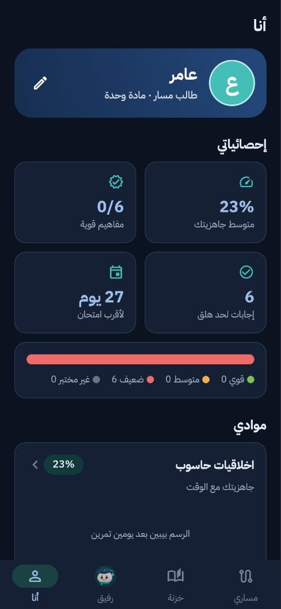
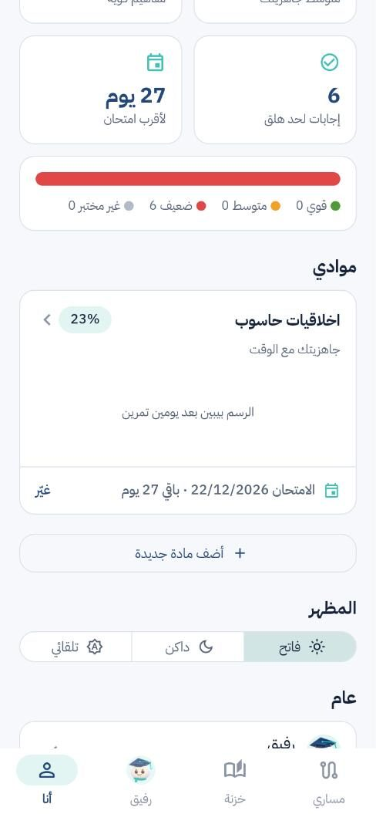

Masar, a study app for university exams
Built with two teammates for the JORDAN.NEXT() hackathon, Education track. A short test maps what a student knows, and a daily plan targets the topics that appear most in real past exams.
- My part
- Colours, dark mode, mentor and profile screens
- Year
- 2026
- Team
- Three students
 Flutter
Flutter Figma
Figma Claude
Claude

Masar, screen by screen
Three questions to start
Name, subject and exam date. Then eight short questions find where the student stands.
Feedback on every answer
Wrong in red, right in green, and the readiness score moves at once: +4%.
Topics weighted by real exams
Each topic shows how often it appears in past papers, so the weak and frequent ones come first.
A plan for today
16 minutes, 12 questions, on the three topics that matter most before the exam.
Rafeeq says hello
I designed the mentor’s welcome: a big avatar over a teal glow and four suggested questions to start a chat.
The profile in numbers
Readiness, strong topics, answers so far and days to the exam, with a mastery bar from weak to strong.
Dark and light, one system
Navy #24477B and teal #44BFB7, with a full dark mode that switches every screen at once.






